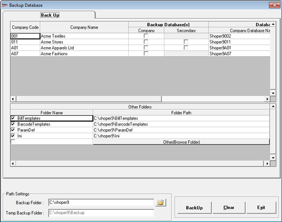

This option can be used when you need to have a database backup, in the folder of your choice, at any given point of time, in addition to the backing up performed by the Close-Day transactions.
How to reach: Housekeeping > Backup
The Login window is displayed to confirm the supervisor's login ID and password.
User ID: Enter supervisor’s login ID (Default is super).
Password: Enter supervisor’s password (Default is nothing).
The Backup Database window with Back Up option activated is displayed.

The Company (Application) Database, Secondary Database and EIS Database, depending on the availability, can be chosen for backup option. Folders like Bill template, Barcode templates, Parameter definitions, Ini folder and any other folder of your choice can also be included in the backup operation.
Company Code: Displays all the company codes of available companies.
Company Name: Displays the respective company name
Backup Company: Check to select the database for backup function
Note: If optional databases like Secondary and EIS are available, then you may also include them for backing up by checking accordingly, as done for Company database.
Database Name(s) Company Database Name: Displays the databases available for backup.
Other Folders: Displays the folder name and folder path. Select the required folders for backup purpose. The subfolders under the selected folder are also backed up.
Other (Browse Folder): Clicking this option opens the folder browse window. You may select any folder of your choice to include in the backup.
Note: The backup path is not saved for future use.
Path Settings
Backup Folder: Clicking this option opens the folder browse window. Browse and select the backup folder.
Temp Backup Folder: The path set in the system parameter is displayed. This cannot be altered.
Note: To change the temporary backup folder, specify the path for the parameter Shoper Temporary Backup Path under the category House Keeping.